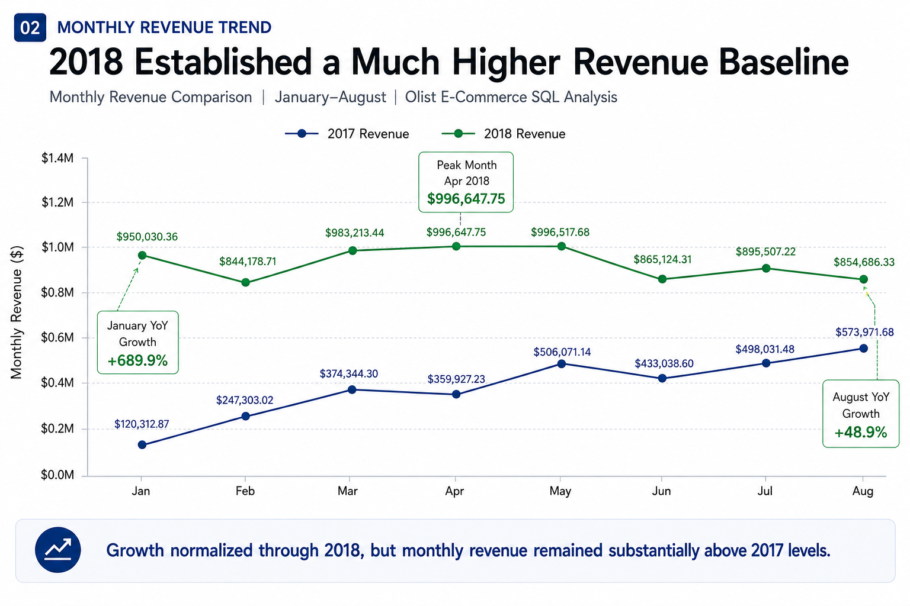
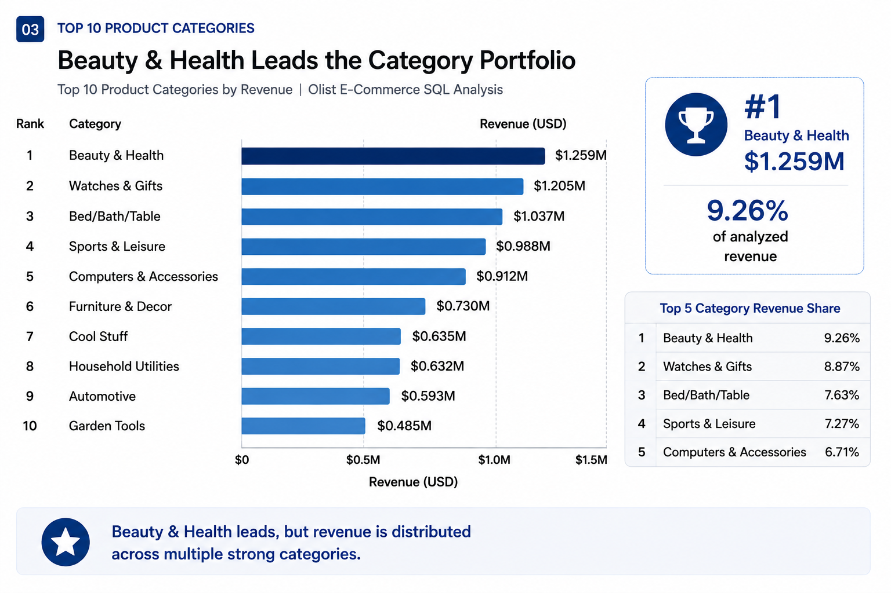
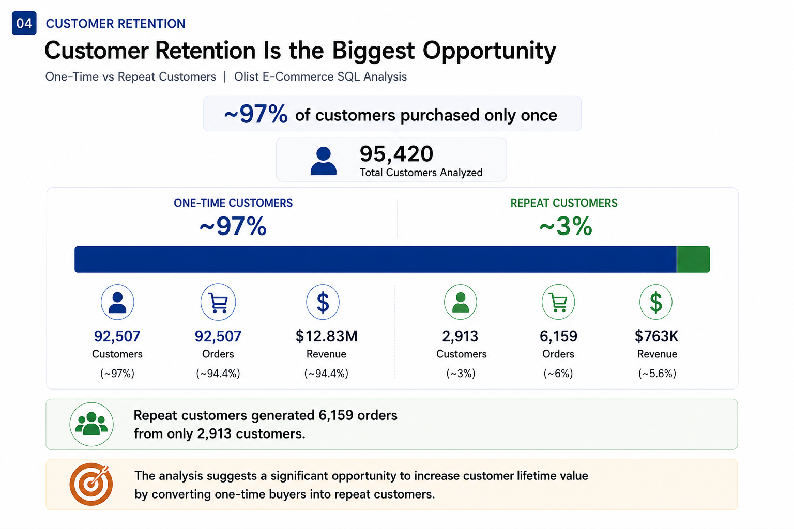
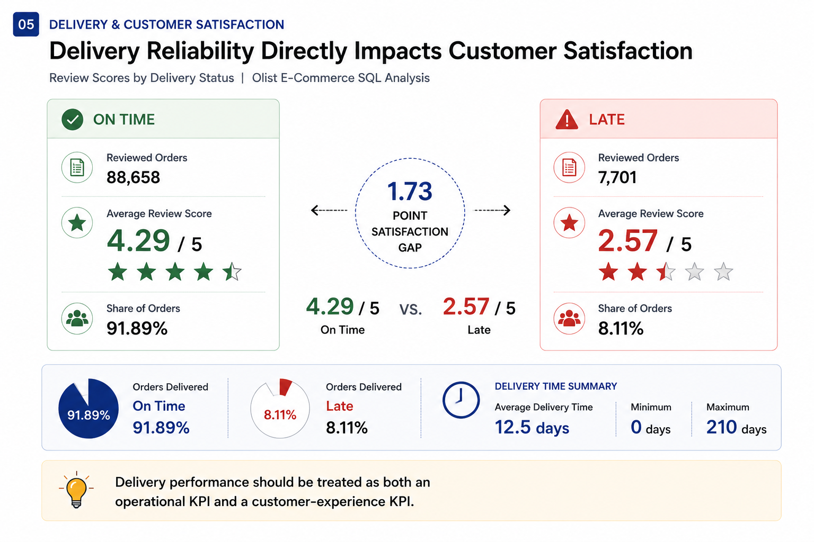

Increase repeat purchases
Use personalized recommendations, loyalty incentives, cross-selling and targeted re-engagement campaigns.
SQL-driven analysis of 99K+ orders to uncover revenue growth, customer retention, product performance and delivery experience insights.
THE BUSINESS QUESTION
Olist operates a large Brazilian e-commerce marketplace connecting customers, sellers and products.
The objective of this analysis was to move beyond basic reporting and use SQL to identify the underlying drivers of revenue, customer behavior and customer experience.
Is revenue growth driven by more orders or higher spending?
Which categories and sellers contribute the most revenue?
How strong is customer retention?
How does delivery performance affect customer satisfaction?
PROJECT AT A GLANCE
HEADLINE RESULTS
Jan–Aug 2018 revenue compared with Jan–Aug 2017.
Revenue expanded dramatically while AOV remained flat.
Customer retention represents the largest opportunity.
Difference between on-time and late-order review scores.
REVENUE GROWTH
Revenue increased from $2.54M to $6.53M between January–August 2017 and January–August 2018.
Revenue and order volume both increased by 157.2%, while Average Order Value remained essentially unchanged. The growth engine was therefore transaction volume.


REVENUE TREND
Every comparable month from January to August 2018 generated substantially more revenue than the corresponding month in 2017.
Growth rates gradually normalized as the 2018 revenue base became larger, but absolute monthly revenue remained substantially above 2017 levels.
PRODUCT PERFORMANCE
Beauty & Health generated approximately $1.259M, making it the highest-revenue category in the analysis.


CUSTOMER RETENTION
92,507 customers were classified as one-time buyers, compared with 2,913 repeat customers.
Olist demonstrates strong transaction generation, but customer retention remains a major opportunity. Improving repeat purchase behavior can increase customer lifetime value without requiring equivalent acquisition effort.
DELIVERY & SATISFACTION
91.89% of analyzed orders were delivered on time, while 8.11% were late.
Late orders received dramatically lower review scores. Reducing delivery delays should therefore be treated as both an operational and customer-experience priority.

BUSINESS RECOMMENDATIONS
Use personalized recommendations, loyalty incentives, cross-selling and targeted re-engagement campaigns.
Identify recurring seller delays, geographic bottlenecks and high-risk shipments.
Use bundles, premium products, cross-category recommendations and repeat-purchase incentives.
Focus resources on proven demand while monitoring seller-level delivery and satisfaction.
TECHNICAL APPROACH
FINAL TAKEAWAY
The next opportunity is turning that demand into stronger retention, higher customer value and more reliable customer experiences.